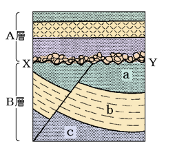
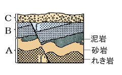
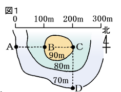
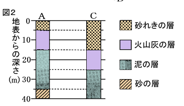
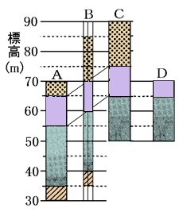

💡 地層を読み解くコツ
① 地層は下にあるものほど古い(上へ重なるように積もる)
② しゅう曲(曲がり)や断層(ずれ)は、それを受けた地層ができたあとに起きたできごと。断層に切られている地層は、断層より古い
③ 断層に切られずに、上をおおっている地層は、断層より新しい
④ 曲がった地層の上に、曲がっていない地層がのっているときは、下の地層が曲がったあとに、上の地層が積もった
⑤ 柱状図を比べるときは、地表からの深さではなく標高になおす(標高=地表の標高−深さ)
① 地層は下にあるものほど古い(上へ重なるように積もる)
② しゅう曲(曲がり)や断層(ずれ)は、それを受けた地層ができたあとに起きたできごと。断層に切られている地層は、断層より古い
③ 断層に切られずに、上をおおっている地層は、断層より新しい
④ 曲がった地層の上に、曲がっていない地層がのっているときは、下の地層が曲がったあとに、上の地層が積もった
⑤ 柱状図を比べるときは、地表からの深さではなく標高になおす(標高=地表の標高−深さ)
1できごとを古い順に並べる①
📖 入試問題 より(秋田県)
右図は、ある場所の露頭に見られる地層を観察し、その一部をスケッチしたものである。図の地層から、過去のできごとの一部として、次のア〜エのことがわかった。これらのできごとを古い順に並べ、記号を書け。

露頭のスケッチ(A層・B層・X−Y面・断層)
ア 断層ができた。
イ B層がしゅう曲した。
ウ X〜Y面ができた。
エ A層が堆積した。
イ B層がしゅう曲した。
ウ X〜Y面ができた。
エ A層が堆積した。
問1 ステップ1
イ(B層がしゅう曲した)と ア(断層ができた)は、どちらが先ですか。
ヒント1図のB層(a・b・c)を見てください。どの層も曲がっています。そして、1本の断層の線が、その曲がった層をななめに横切っています。
ヒント2断層は、すでにある地層を切ってずらします。「先に曲がっていた層」を「あとから断層が切った」と考えられます。
答え:イ → ア
しゅう曲が先、断層があとです。
しゅう曲が先、断層があとです。
問1 ステップ2
ア(断層ができた)と ウ(X〜Y面ができた)は、どちらが先ですか。
ヒント1断層の線を、下から上へたどってみましょう。どこで止まっていますか。
ヒント2断層の線は X−Y面のところで止まっていて、その上のA層にはのびていません。
ヒント3X−Y面を切っていない断層は、X−Y面より古いできごとです。(断層ができたあとで、B層の上部が削られ、X−Y面ができました)
答え:ア → ウ
断層が先、X−Y面があとです。
断層が先、X−Y面があとです。
問1 ステップ3
ウ(X〜Y面ができた)と エ(A層が堆積した)は、どちらが先ですか。
ヒント1A層は、X−Y面の上にのっています。地層は下から順に積もっていきます。
ヒント2まずX−Y面(削られた面)ができ、そのあとで、その上にA層が積もりました。このような面を「不整合面」といいます。
答え:ウ → エ
問1 答え
ここまでをつなげて、ア〜エを古い順に並べましょう。
ヒント1ステップ1〜3の結果は「イ→ア」「ア→ウ」「ウ→エ」でした。この3つをつなげます。
答え:イ → ア → ウ → エ
できごとの流れをくわしく見ると、次のようになります。
できごとの流れをくわしく見ると、次のようになります。
- B層が海底で堆積して、水平な地層ができた。
- 地殻の変動で両端を押す力が加わり、B層がしゅう曲した。(イ)
- しゅう曲したB層の両端を引っ張る力がはたらき、断層ができた。(ア)
- 隆起が起こり、B層が海中から地上にもちあげられた。
- 地上では、流水などの侵食作用によって、B層の上部が削られた。(ウ)
- その後、B層が沈降して水中に没し、削られたB層の上部にA層の地層が堆積し、X−Yの不整合面ができた。(ウ・エ)
- ふたたび、隆起が起こった。
2できごとを古い順に並べる②
📖 入試問題 より(岩手県)
次のア〜オは、右図の地層がつくられるまでの主なできごとである。ア〜オを起こった順に並べかえ、その記号を書け。

地層の断面(A・B・C と 断層 f−f')
ア Aの地層が堆積した。
イ Bの地層が堆積した。
ウ Cの地層が堆積した。
エ Aの地層が曲げられた。
オ f−f′の断層で地層がずれた。
イ Bの地層が堆積した。
ウ Cの地層が堆積した。
エ Aの地層が曲げられた。
オ f−f′の断層で地層がずれた。
問2 ステップ1
ア(Aの地層が堆積した)と エ(Aの地層が曲げられた)は、どちらが先ですか。
ヒント1曲げられるためには、まず、曲げられる地層がなければなりません。
答え:ア → エ
Aの地層ができてから、曲げられました。
Aの地層ができてから、曲げられました。
問2 ステップ2
エ(Aの地層が曲げられた)と イ(Bの地層が堆積した)は、どちらが先ですか。
ヒント1図でAとBを見比べましょう。Aの層は大きく曲がっていますが、Bの層はどうなっていますか。
ヒント2Bの層は、Aのように大きく曲がっていません。もしBが積もったあとで地層が曲げられたのなら、Bも一緒に曲がるはずです。
ヒント3曲がったAの上に、曲がっていないBがのっています。つまり、Aが曲げられたあとで、Bが積もりました。
答え:エ → イ
問2 ステップ3
イ(Bの地層が堆積した)と オ(f−f′の断層でずれた)は、どちらが先ですか。
ヒント1断層 f−f′ の線を、下から上へたどってみましょう。どの地層を切っていますか。
ヒント2f−f′ の断層は、Aの地層だけでなく、Bの地層も切っています。断層に切られている地層は、断層より古いものです。
答え:イ → オ
問2 ステップ4
オ(f−f′の断層でずれた)と ウ(Cの地層が堆積した)は、どちらが先ですか。
ヒント1f−f′ の断層は、いちばん上のCの地層まで届いているでしょうか。
ヒント2断層はCの地層を切っていません。Cは、断層ができたあとに、その上に積もったのです。
答え:オ → ウ
問2 答え
ここまでをつなげて、ア〜オを起こった順に並べましょう。
ヒント1ステップ1〜4の結果は「ア→エ」「エ→イ」「イ→オ」「オ→ウ」でした。順番につなげます。
答え:ア → エ → イ → オ → ウ
Aが積もる → Aが曲げられる → Bが積もる → 断層でずれる → Cが積もる、の順です。
Aが積もる → Aが曲げられる → Bが積もる → 断層でずれる → Cが積もる、の順です。
3ボーリング調査と柱状図の読み取り
📖 入試問題 より(富山県) ★★★ 難問
ある地域でボーリングによって地下のようすを調べた。図1は、地形図を模式的に示したもので、A〜Dは調査した地点である。図2は、A地点とC地点の地層の重なり方を柱状図で表したものである。なお、この地域の地層は東西の方向に同じ角度で傾いており、火山灰の層は1つしかないことがわかっている。あとの問いに答えよ。
(1) D地点の地表付近はどのような層か、次の中から1つ選べ。

図1 地形図

図2 A地点・C地点の柱状図
[砂れきの層 火山灰の層 泥の層 砂の層]
(2) B地点でボーリングを行うと、地表から何m掘ったところで火山灰の層が現れ始めると予想されるか。
問(1) ステップ1
地形図(図1)から、C地点とD地点の標高をよみとりましょう。
ヒント1図1の等高線(曲線)には、70m・80m・90m と数字が書いてあります。CとDは、それぞれどの線の上にありますか。
ヒント2Cは90mの等高線の上、Dは70mの等高線の上にあります。(同じように、BはCと同じ90m、AはDと同じ70mです)
答え:C地点 90m、D地点 70m
標高は、A・Dが70m、B・Cが90mです。
標高は、A・Dが70m、B・Cが90mです。
問(1) ステップ2
C地点の柱状図(図2)で、火山灰の層は標高では何m〜何mにありますか。
ヒント1柱状図は「地表からの深さ」で書かれています。標高になおすには、地表の標高から深さをひきます。Cの地表の標高は90mでした。
ヒント2図2のCを見ると、火山灰の層は、地表から15m〜25mの深さにあります。
ヒント390−15 と 90−25 を計算しましょう。
答え:標高65m〜75m
90−15=75、90−25=65 です。
90−15=75、90−25=65 です。
問(1) 答え
D地点の地表付近(標高70m)は、どの層ですか。
ヒント1この地域の地層は、東西には傾いていますが、南北には傾いていません。図1で、CとDは南北に並んでいるので、同じ標高には同じ層があります。
ヒント2Dの地表は標高70mです。Cで標高70mのところは、どの層でしょう。Cの火山灰の層は、標高65m〜75mにありました。
答え:火山灰の層
標高70mは、65m〜75mの範囲に入っているので、D地点の地表付近は火山灰の層です。
標高70mは、65m〜75mの範囲に入っているので、D地点の地表付近は火山灰の層です。
問(2) ステップ1
A地点の柱状図(図2)で、火山灰の層は標高では何m〜何mにありますか。
ヒント1Cのときと同じように、地表の標高(Aは70m)から深さをひきます。
ヒント2図2のAを見ると、火山灰の層は、地表から5m〜15mの深さにあります。
答え:標高55m〜65m
70−5=65、70−15=55 です。
70−5=65、70−15=55 です。
問(2) ステップ2
AとCの火山灰の層を比べましょう。火山灰の層は、東と西のどちらが高くなっていますか。また、AからCまで(200m)で何m変わりますか。
ヒント1火山灰の層の「上の面」の標高を比べます。A地点は65m、C地点は?(問(1)のステップ2を見てください)
ヒント2図1で、Aは西、Cは東にあります。Cの上の面は75mなので、75−65 を計算しましょう。
答え:東が高い(200mで10m高くなる)
下の面も、A:55m → C:65m で、同じく10m高くなっています。
下の面も、A:55m → C:65m で、同じく10m高くなっています。
問(2) ステップ3
AとCのちょうど真ん中にあるB地点では、火山灰の層は標高何m〜何mにあると考えられますか。
ヒント1図1で、A(0m)・B(100m)・C(200m)の位置を確認しましょう。Bは、AとCのちょうど真ん中です。
ヒント2地層は東西に同じ角度で傾いているので、Bの火山灰の層の標高は、AとCのちょうど真ん中になります。上の面は 65m と 75m の真ん中、下の面は 55m と 65m の真ん中です。
答え:標高60m〜70m
上の面は(65+75)÷2=70m、下の面は(55+65)÷2=60m です。
上の面は(65+75)÷2=70m、下の面は(55+65)÷2=60m です。
問(2) 答え
B地点の標高は90mです。地表から何m掘ると、火山灰の層が現れ始めますか。
ヒント1火山灰の層の「上の面」は標高70m、地表は標高90mです。「現れ始める」のは、層の上の面にあたったときです。
ヒント2地表から上の面までの深さは、90−70 で求められます。
答え:20m
90−70=20m。20m〜30mのところに火山灰の層があります。
90−70=20m。20m〜30mのところに火山灰の層があります。

A〜D地点の柱状図を標高でそろえた図。火山灰の層(紫)の上の面と下の面を、それぞれ直線で結ぶと、Bでは標高60〜70mにあたります。